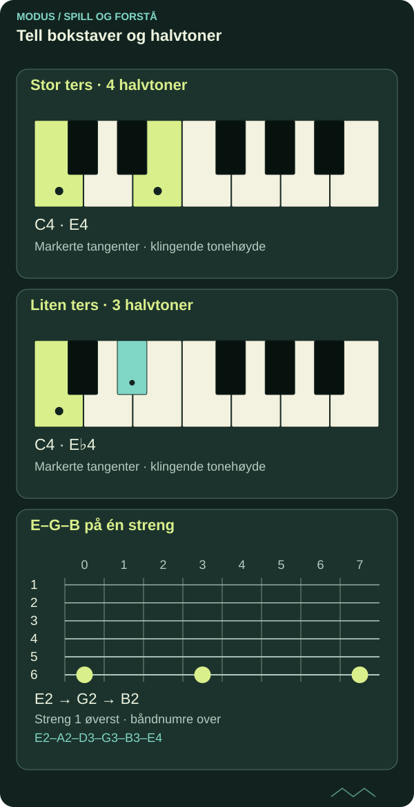

Toner og intervaller: musikkens byggesteiner
Du trenger ikke kunne alle navnene før du begynner å spille. Start med avstanden mellom to toner – og lytt til hva den gjør med musikken.

En tone er et utgangspunkt
Spill en E. Spill deretter en annen tone. Det du hører mellom dem, er et intervall. Intervallet kan oppleves som nært eller vidt, rolig eller spent. Opplevelsen påvirkes av klang, register og musikalsk sammenheng.
På gitaren er ett bånd et halvt trinn. På pianoet er et halvt trinn avstanden til nærmeste tangent, enten den er hvit eller svart. Mellom E og F, og mellom B og C, er det et halvt trinn selv om begge tangentene er hvite.

Les diagrammet som tekst
- Stor ters · 4 halvtoner: C4 → E4
- Liten ters · 3 halvtoner: C4 → E♭4
- E–G–B på én streng: streng 6, bånd 0: E2; streng 6, bånd 3: G2; streng 6, bånd 7: B2
Fra halve trinn til intervaller
To halve trinn gir ett helt trinn. Fra C til D er avstanden to halvtoner. Fra C til E er den fire halvtoner: en stor ters. Fra C til E♭ er den tre halvtoner: en liten ters.
| Fra C til | Intervall | Halvtoner |
|---|---|---|
| D | Stor sekund | 2 |
| E♭ | Liten ters | 3 |
| E | Stor ters | 4 |
| G | Ren kvint | 7 |
| C, en oktav opp | Ren oktav | 12 |
Antall halvtoner er et nyttig kart, men det er ikke alltid nok til å finne intervallets fulle navn. Vi må også se på bokstavnavnene.
Fra C til F teller vi fire tonenavn: C–D–E–F. Det er en kvart. Fra C til G teller vi fem: C–D–E–F–G. Det er en kvint. Begge tonene telles med.
Deretter bruker vi halvtonene til å bestemme intervallkvaliteten. C–F♯ har seks halvtoner og er en forstørret kvart. C–G♭ har også seks halvtoner, men er en forminsket kvint.
På et vanlig piano med likestemming klinger disse intervallene likt når de spilles i samme register. Likevel skrives de forskjellig og kan ha ulike roller i musikken.
Husk derfor to spørsmål: Hvor mange tonenavn omfatter intervallet, og hvor mange halvtoner er det mellom tonene?
Lytt før du pugger
Spill først tonene etter hverandre. Da hører du intervallet som en melodisk bevegelse. Spill dem så samtidig. Da møter du intervallet som samklang.
Begynn med bare to intervaller, for eksempel liten og stor ters. Sammenlign dem fra samme grunntone. Målet er å kjenne igjen en forskjell du kan bruke, fremfor å samle flest mulig betegnelser på én gang.
Beskriv det du spiller
Velg én streng på gitaren og spill E–G–B. Fra E til G er det tre halvtoner, en liten ters. Fra G til B er det fire halvtoner, en stor ters. Fra E til B er det sju halvtoner, en ren kvint. Du undersøker samme tre toner fra forskjellige utgangspunkt.
Spill så tonene på piano eller over flere strenger. Intervallene bestemmes av tonehøydene, ikke av hvordan grepet ser ut. Forklar først hvilket intervall du forventer, og kontroller deretter med instrumentet.
FRA LESING TIL SPILLING
Prøv det selv.
Spill C–E og C–E♭ rolig, først etter hverandre og deretter samtidig. Syng den øverste tonen før du spiller den. Gjenta fra D og E.
Utforsk intervaller med flygelSJEKK FORSTÅELSEN
Hva sitter igjen?
Tre spørsmål om det du har lest. Alle tre riktige gir fullført quiz. Du kan prøve så mange ganger du vil.
Fullføring lagres i denne nettleseren og deles mellom norsk og engelsk.
Du har svart riktig på alle tre spørsmålene. Ta ideen med til instrumentet.
Til artikkelbiblioteket ↗︎